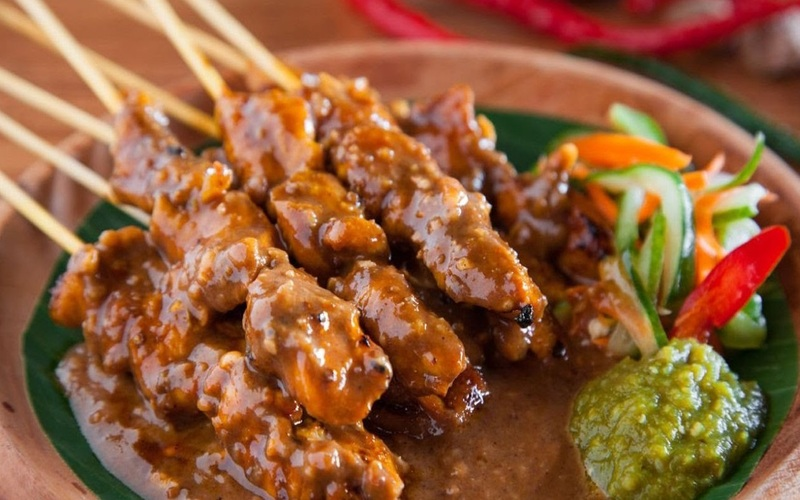

Location: Most restaurants and street foods stands have it.
A West Sumatran delicacy featuring grilled beef or offal (tongue, heart, intestines) served with a thick, aromatic, yellow-to-red curry sauce.
Location: Most restaurants have it.
A beloved national dish typically served with a fried egg, acar (pickled cucumber/carrots), and kerupuk (crackers)